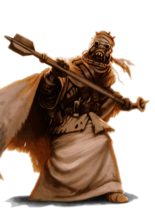

Tusken

Tratti dei Tusken
| Aumento dei punteggi caratteristica | Il punteggio di Costituzione aumenta di 2 e la Forza od il Carisma aumentano di 1 |
| Eta' | I tusken sono considerati adulti a 15 anni. Per colpa del clima ostile del loro mondo d'origine raramente vivono per piu' di meta' secolo |
| Allineamento | Lato caotico oscuro della forza |
| Taglia | Media |
| Velocita' | 9m |
| Aggressivo | Con un'azione bonus puoi muoverti fino al massimo della tua velocita' verso un nemico che sei in grado di vedere o sentire. Se decidi di utilizzare questo tratto devi terminare il turno in uno spazio piu' vicino possibile al nemico di quando hai iniziato il turno |
| Addestratore di Animali | Sei competente nell'abilita' di Addestrare Animali |
| Ruggito Minaccioso | Una volta al giorno puoi lanciare il potere della forza Paura (Fear). Il carisma e' la caratteristica di forza-lancio. |
| Sopravvissuto delle Sabbie | Sei competente nell'abilita' di Sopravvivenza ed il deserto, per te, non risulta come terreno difficile. Infine, ottieni vantaggio nei tiri salvezza su Costituzione contro l'esaurimento causato dal caldo estremo |
| Riluttanza Tecnologica | Non puoi utilizzare poteri tecnologici o prendere livelli in classi con tecno-lancio |
| Armi Tusken | Sei competente nelle armi: fucile cycler, vibro-ascia |
| Linguaggi | Sai parlare Tusken e sai parlare, leggere e scrivere: Galattico Base. Il Tusken non ha una forma scritta. I tusken conoscono un complesso linguaggio dei segni che utilizzano per comunicare tra simili in modo silenzioso |